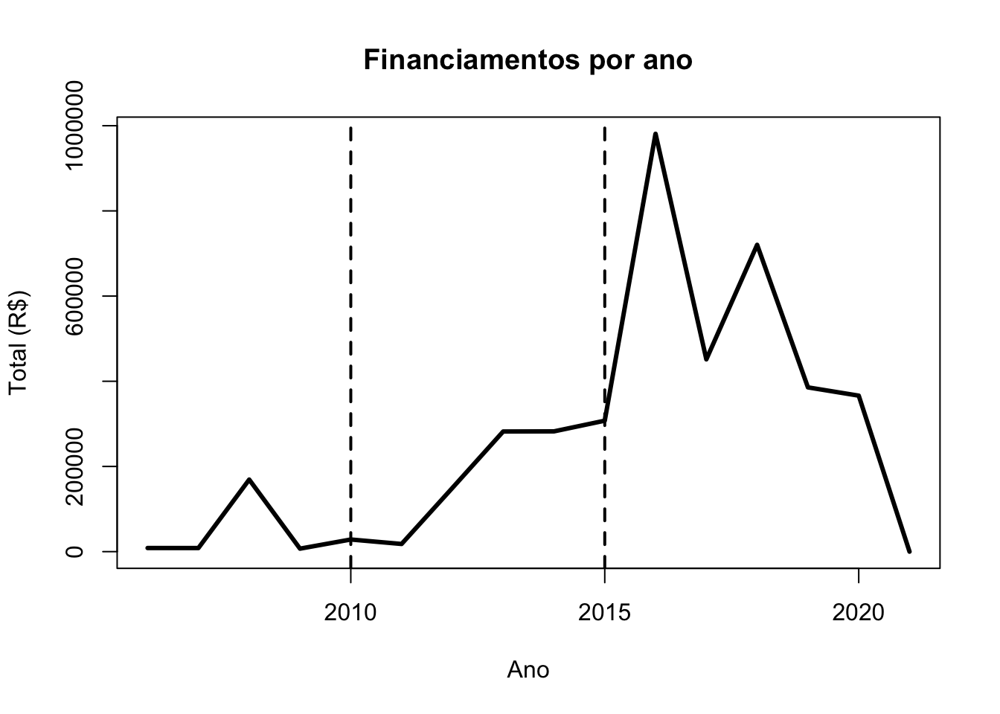
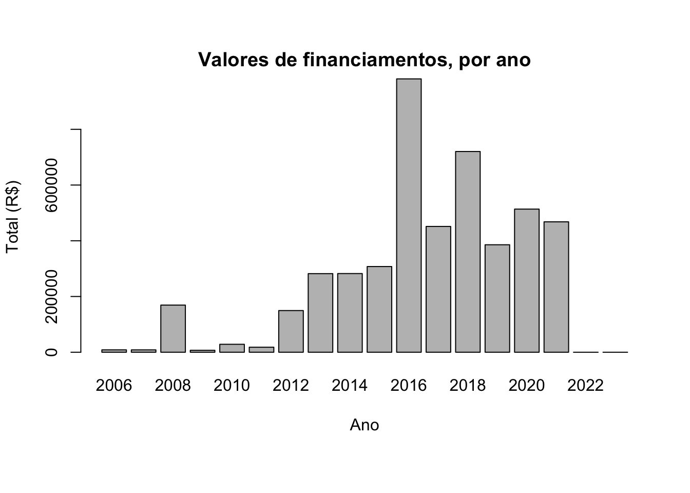
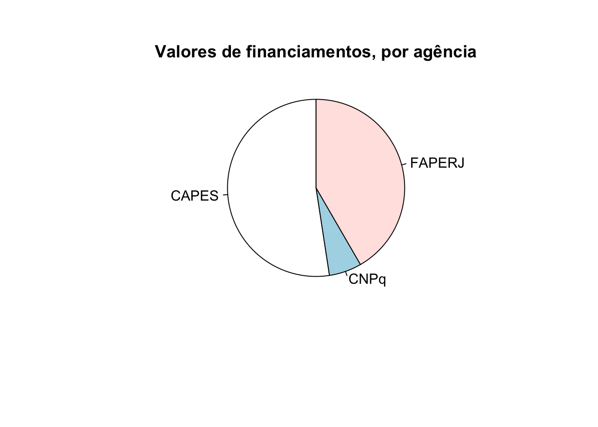
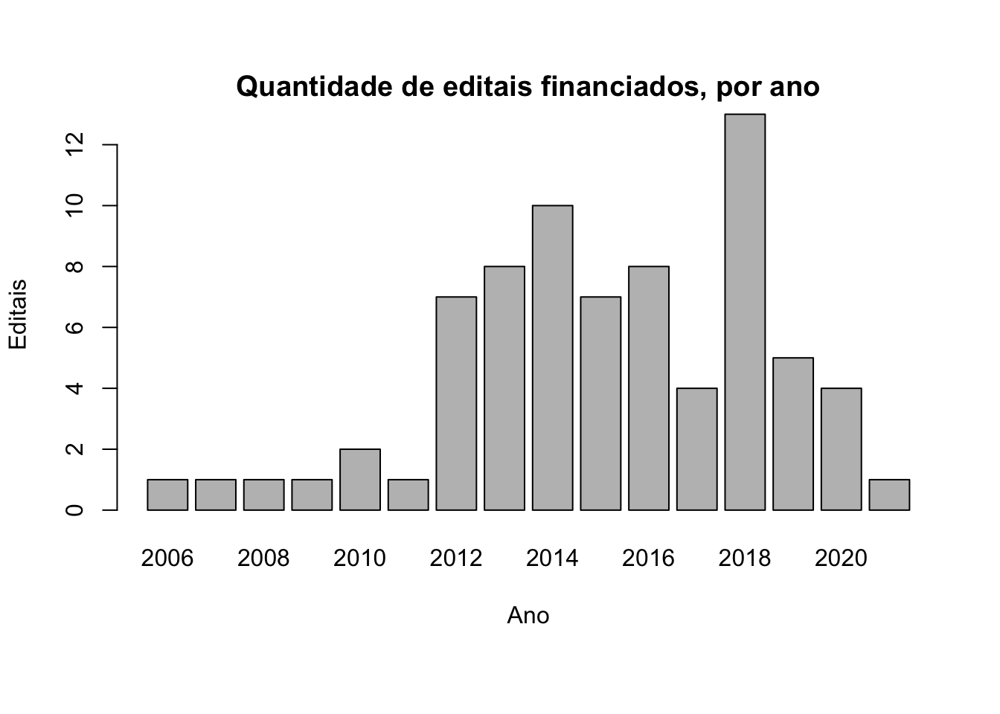
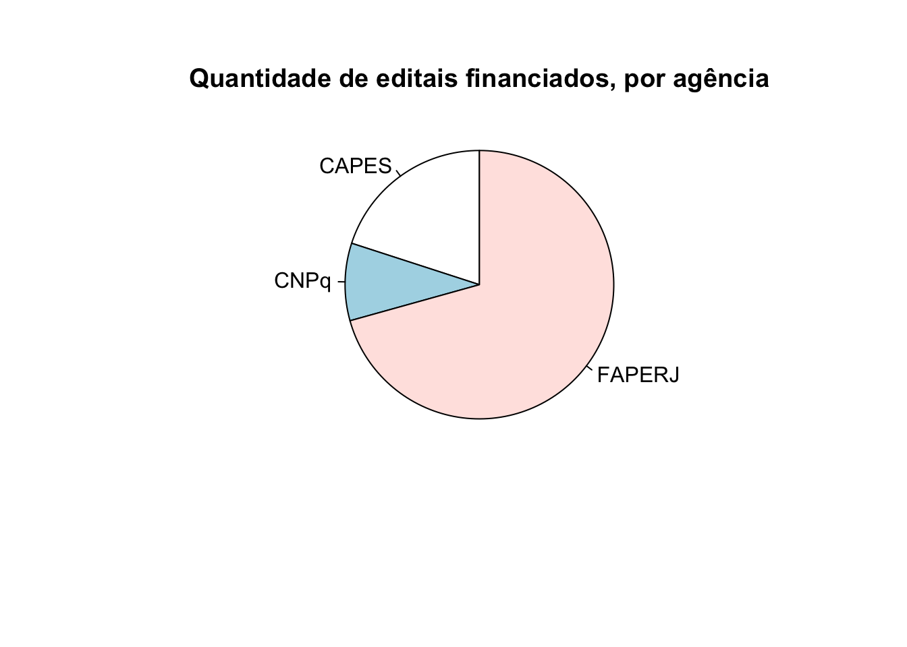
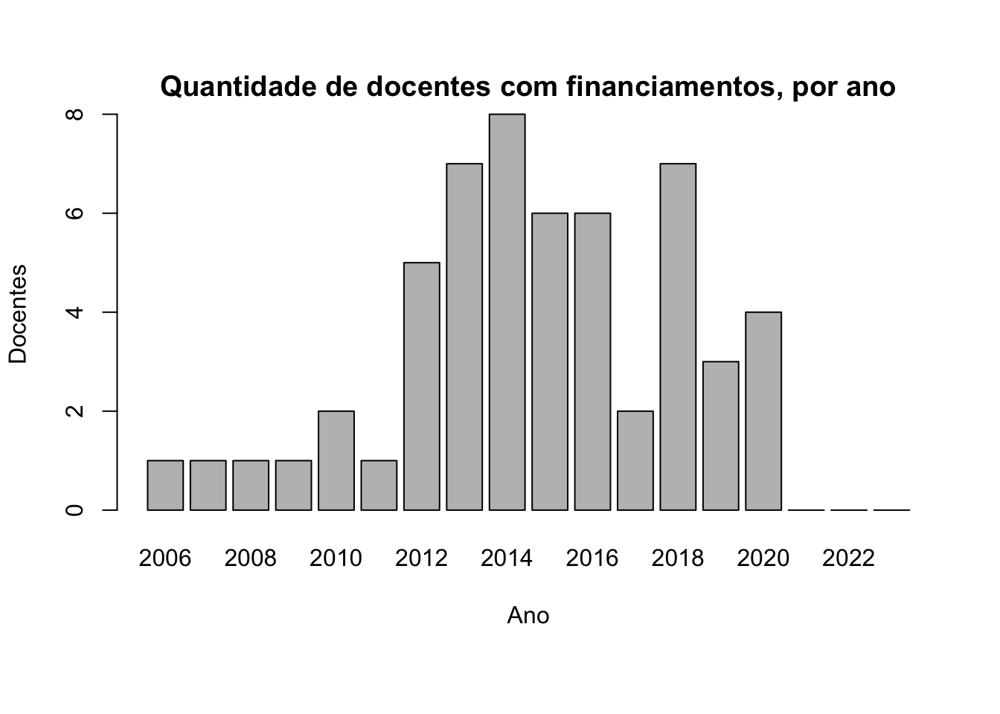

Programa
Apresentação
O PROGRAMA DE PÓS-GRADUAÇÃO EM CIÊNCIAS DA REABILITAÇÃO DA UNISUAM (PPGCR-UNISUAM) tem por objetivo formar profissionais, em nível de Mestrado e Doutorado, para atuação em pesquisa científica e no ensino superior na área de Ciências da Reabilitação, bem como estimular a autonomia de pesquisadores por meio de Estágio Pós-Doutoral.
O PPGCR-UNISUAM tem sua sede na Rua Dona Isabel 94, Bonsucesso, RJ, CEP 21032-060. O PPGCR-UNISUAM insere-se na Grande Área de Conhecimento de Ciências da Saúde (40000001), na Área Básica de Educação Física (40900002), Subárea de Fisioterapia e Terapia Ocupacional (40800008) (http://www.capes.gov.br/avaliacao/instrumentos-de-apoio/tabela-de-areas-do-conhecimento-avaliacao). O PPGCR-UNISUAM oferece as titulações de Mestre em Ciências da Reabilitação e Doutor em Ciências da Reabilitação, além do Estágio Pós-Doutoral em Ciências da Reabilitação.
| Dados do Programa | Dados |
|---|---|
| Código: | 31063012002P4 |
| Nome: | Ciências da Reabilitação |
| Nome inglês: | Rehabilitation Sciences |
| Coordenador(a): | ARTHUR DE SA FERREIRA |
| Área Básica: | FISIOTERAPIA E TERAPIA OCUPACIONAL |
| Área de Avaliação: | EDUCAÇÃO FÍSICA |
| Data de recomendação: | 28/09/2009 |
| Modalidade: | ACADÊMICO |
| Regime Letivo: | SEMESTRAL |
| Dados do Programa | Endereço |
|---|---|
| CEP: | 21032-060 |
| Logradouro: | Rua Dona Isabel |
| Número: | 94 |
| Complemento: | Escola de Saúde |
| Bairro: | Bonsucesso |
| Município: | Rio de Janeiro - RJ |
| URL: | https://www.unisuam.edu.br/mestrado/mestrado-academico-em-ciencias-da-reabilitacao |
| NA | https://www.unisuam.edu.br/doutorado-academico-em-ciencias-da-reabilitacao |
| NA | https://www.unisuam.edu.br/pos-doutorado-academico-em-ciencias-da-reabilitacao |
| Fax: | NA |
| E-mail institucional do programa: | SECRETARIACR@UNISUAM.EDU.BR |
Cursos
O curso de Mestrado Acadêmico em Ciências da Reabilitação objetiva a qualificação do pós-graduando para docência em nível superior e pesquisa por meio do aprimoramento do conhecimento acadêmico e profissional. O curso proporciona ao aluno bases técnico-científicas para a pesquisa e o ensino, tornando-o apto a exercer as atividades da docente de nível universitário e inseri-lo em atividades de pesquisa.
O curso de Doutorado Acadêmico em Ciências da Reabilitação objetiva a formação de pesquisadores independentes com capacidade de produzir evidências científicas em Ciências da Reabilitação, bem como atuar na docência superior. O curso visa a intensificação do aprendizado e a consolidação do conhecimento científico, visando formar pesquisadores independentes com capacidade de desenvolver projetos de pesquisa e orientar discentes nos diferentes níveis de formação acadêmica.
| Código | Curso | Nível |
|---|---|---|
| 31063012002D5 | CIÊNCIAS DA REABILITAÇÃO | Doutorado |
| 31063012002M4 | Ciências da Reabilitação | Mestrado |
Estrutura curricular
A estrutura curricular do Programa de Pós-graduação em Ciências das Reabilitação foi elaborada visando a efetivação do perfil do egresso dos cursos de Mestrado e Doutorado Acadêmicos. As disciplinas da estrutura curricular estão organizadas simultaneamente em Eixos, Área de Concentração/Linhas de Pesquisa e Caráter.
O Eixo Básico compreende as disciplinas consideradas fundamentais para o pensamento científico e a formulação de problemas de pesquisa. O Eixo Científico inclui disciplinas que oferecem recursos para elaboração de projetos de pesquisa e divulgação dos seus resultados, seja na forma de manuscritos e/ou apresentações de trabalhos. O Eixo Pedagógico agrega as disciplinas que enfatizam as habilidade e competências para atuação no nível superior (ensino e pesquisa) em níveis de graduação e pós-graduação. O Eixo Inovador compreende as disciplinas com foco na utilização e desenvolvimento de recursos tecnológicos em reabilitação bem como a discussão de tópicos inovadores em pesquisa. Considerando que esses três Eixos apresentam caráter independente do tema da pesquisa, as suas disciplinas são consideradas como Transversais. Nestes eixos, o Caráter Obrigatório ou Eletivo das disciplinas é determinando considerando-se as diferenças entre os perfis do egresso dos cursos de Mestrado e Doutorado.
O Eixo Técnico agrupa as disciplinas de caráter especialista, com ementas voltadas para temas de pesquisa mais específicos. Assim, as disciplinas deste Eixo são subdivididas de acordo com a única Área de Concentração do Programa e suas Linhas de Pesquisa: Avaliação Funcional em Reabilitação; Abordagem Terapêutica em Reabilitação; e Reabilitação no Esporte e no Esporte Adaptado. Pelo mesmo argumento, são todas de Caráter Eletivo.
| Disciplina | Eixo | Linha | MA | DA | CH |
|---|---|---|---|---|---|
| Bioestatística I | Básico | Transversal | OBR | OBR | 4 |
| Bioética na Pesquisa com Seres Humanos | Básico | Transversal | OBR | OBR | 2 |
| Epidemiologia em Reabilitação I | Básico | Transversal | OBR | OBR | 4 |
| Filosofia da Ciência* | Básico | Transversal | OBR | OBR | 2 |
| Bioestatística II | Básico | Transversal | ELE | OBR | 4 |
| Epidemiologia em Reabilitação II | Básico | Transversal | ELE | OBR | 4 |
| Ensaio Clínico em Reabilitação | Básico | Transversal | ELE | OBR | 2 |
| Elaboração de Projetos de Pesquisa na Área de Reabilitação | Científico | Transversal | OBR | OBR | 4 |
| Redação de Artigos Científicos na Área de Reabilitação* | Científico | Transversal | ELE | OBR | 2 |
| Seminars in Rehabilitation Sciences* | Científico | Transversal | ELE | OBR | 2 |
| Didática e Prática do Ensino Superior* | Pedagógico | Transversal | OBR | OBR | 2 |
| Atividades Acadêmicas* | Pedagógico | Transversal | ELE | ELE | 2 |
| Introdução à Instrumentação e Análise de Sinais Biomédicos | Inovador | Transversal | ELE | ELE | 2 |
| Estudo do Movimento Humano | Inovador | Transversal | ELE | ELE | 2 |
| Tópicos Especiais em Ciências da Reabilitação | Inovador | Transversal | ELE | ELE | 2 |
| Avaliação dos Sistemas Cardiovascular e Respiratório | Técnico | Linha 1 | ELE | ELE | 2 |
| Avaliação e Diagnóstico Neurofuncional | Técnico | Linha 1 | ELE | ELE | 2 |
| Avaliação Funcional do Sistema Músculo-Esquelético | Técnico | Linha 1 | ELE | ELE | 2 |
| Neurociência Aplicada à Reabilitação | Técnico | Linha 2 | ELE | ELE | 2 |
| Reabilitação Cardiovascular e Respiratória | Técnico | Linha 2 | ELE | ELE | 2 |
| Reabilitação Musculoesquelética* | Técnico | Linha 2 | ELE | ELE | 2 |
| Fisiologia do Exercício Clínico | Técnico | Linha 3 | ELE | ELE | 2 |
Legenda: Linha 1: Avaliação Funcional em Reabilitação; Linha 2: Abordagem Terapêutica em Reabilitação; Linha 3: Reabilitação no Esporte e no Esporte Adaptado. * Disciplinas novas. MA: Mestrado Acadêmico; DA: Doutorado Acadêmico; CR: créditos.
Área de Concentração
O PPGCR-UNISUAM organiza sua ÁREA DE CONCENTRAÇÃO (AC), LINHAS DE PESQUISA (LP) e PROJETOS DE PESQUISA (PP) de acordo com o princípio geral de que a reabilitação está centrada no binômio avaliação-intervenção, em todas as fases do processo saúde-doença, em diversas populações sob o modelo biopsicossocial. Atendem-se assim às demandas por investigação em níveis de atenção primária (prevenção e promoção da saúde), secundária (diagnóstico precoce e intervenção imediata) e terciária (reabilitação) nas diversas especialidades da Fisioterapia em particular área e da saúde em geral.
| Área de Concentração | Descrição | Início | Fim |
|---|---|---|---|
| ASPECTOS FUNCIONAIS EM REABILITAÇÃO | Analisar os processos envolvidos nas respostas funcionais, os métodos e técnicas de avaliação, bem como a investigação da eficácia de intervenções relacionadas à prevenção e reabilitação física dos sistemas orgânicos no âmbito individual e coletivo. | 01/01/2010 | Ativa |
Linhas de Pesquisa
A partir desta AC são derivadas as 3 LP vigentes: ABORDAGEM TERAPÊUTICA EM REABILITAÇÃO, AVALIAÇÃO FUNCIONAL EM REABILITAÇÃO e REABILITAÇÃO NO ESPORTE E NO ESPORTE ADAPTADO. Mediante a expansão do corpo docente e laboratórios, com consequente aumento da diversidade dos PP, uma LP (AVALIAÇÃO FUNCIONAL E ATIVIDADE FÍSICA) foi encerrada e outra (AVALIAÇÃO E INTERVENÇÃO NO ESPORTE ADAPTADO) foi renomeada e redefinida em sua descrição. A atual organização das LP reforça a interdisciplinaridade e transdisciplinaridade dos PP do PPGCR-UNISUAM, caracterizado por aliar áreas específicas do conhecimento de seus docentes e discentes para responder às questões que uma única área ou especialidade não responderia adequadamente. As LP e suas respectivas descrições são revisadas continuamente, sendo a última atualização em 2017, a partir das sugestões do parecer da Comissão de Avaliação Quadrienal 2017.
| Linhas de Pesquisa | Descrição | Início | Fim |
|---|---|---|---|
| ABORDAGEM TERAPÊUTICA EM REABILITAÇÃO | Estudo de ações de atenção primária, secundária e terciária, considerando as diferentes características populacionais e sua inserção nas políticas públicas de saúde. Estudo do efeito das intervenções terapêuticas na capacidade funcional e na qualidade de vida nas fases do desenvolvimento, visando a reabilitação de desordens nas diversas populações. | 01/01/2010 | Ativa |
| AVALIAÇÃO FUNCIONAL E ATIVIDADE FÍSICA | Esta linha de pesquisa abrange o estudo dos aspectos funcionais, metodológicos e epidemiológicos envolvidos no processo saúde-doença e no desempenho esportivo, influenciados pelas condições fisiológicas, fisiopatológicas, cognitivas, biomecânicas, biofísicas, bioquímicas e morfológicas. Tem como objetivo o planejamento de ações estratégicas de promoção, prevenção e reabilitação, considerando as diferentes características populacionais e sua inserção nas políticas públicas de saúde. | 01/01/2010 | 01/09/2015 |
| AVALIAÇÃO FUNCIONAL EM REABILITAÇÃO | Estudo dos aspectos funcionais do processo saúde-doença nas diversas populações, considerando as dimensões biopsicossociais (morfológica, biomecânica, fisiológica, fisiopatológica, cognitiva, emocional e participação). Estudo, desenvolvimento e validação de procedimentos e tecnologias para avaliação funcional em reabilitação. | 01/01/2014 | Ativa |
| REABILITAÇÃO NO ESPORTE E NO ESPORTE ADAPTADO | Estudo dos aspectos fisiológicos, biomecânicos, funcionais e sociais relacionados à prática de esportes, incluindo os adaptados, e a otimização do desempenho, abrangendo praticantes recreacionais e profissionais em todas as faixas etárias. Estudo dos fatores de risco e proteção de lesões advindas da prática esportiva e dos efeitos de intervenções para sua prevenção, recuperação e reabilitação em diversas populações. | 01/01/2014 | Ativa |
Projetos de Pesquisa
Lista completa de projetos de pesquisa
Os docentes vinculados ao PPGCR são orientados a coordenar até 2 PP institucionais (“guarda-chuva”) por LP, sendo cada PP vinculado a uma LP diferente. Adicionalmente, os docentes são estimulados a colaborar nos projetos das diferentes LP, de modo que a transdisciplinaridade gere aspectos inovadores para as Ciências da Reabilitação. Desse modo, PP anteriores a 2017 têm sido concluídos e substituídos por novos projetos institucionais, promovendo assim uma melhor distribuição dos PP e respectivas produções entre as LP. Considerando-se a interação de fatores tais como as áreas de formação e atuação dos docentes, a temática dos PP, e sua aderência aos grupos de pesquisa, evidencia-se certa assimetria na distribuição dos PP entre as LP ativas.
| ABORDAGEM TERAPÊUTICA EM REABILITAÇÃO | AVALIAÇÃO FUNCIONAL EM REABILITAÇÃO | REABILITAÇÃO NO ESPORTE E NO ESPORTE ADAPTADO | N | |
|---|---|---|---|---|
| AGNALDO JOSE LOPES | 1 | 1 | 0 | 2 |
| ALEX SOUTO MAIOR ALVES | 1 | 0 | 1 | 2 |
| ARTHUR DE SA FERREIRA | 0 | 1 | 0 | 1 |
| BRUNO FERREIRA VIANA | 0 | 1 | 1 | 2 |
| ERIKA DE CARVALHO RODRIGUES | 1 | 1 | 0 | 2 |
| FABIO VIEIRA DOS ANJOS | 1 | 0 | 0 | 1 |
| IGOR RAMATHUR TELLES DE JESUS | 1 | 1 | 1 | 3 |
| LAURA ALICE SANTOS DE OLIVEIRA | 1 | 1 | 0 | 2 |
| LEANDRO ALBERTO CALAZANS NOGUEIRA | 1 | 1 | 0 | 2 |
| LUIS FELIPE DA FONSECA REIS | 1 | 1 | 0 | 2 |
| NEY ARMANDO DE MELLO MEZIAT FILHO | 1 | 1 | 0 | 2 |
| PATRICIA DOS SANTOS VIGARIO | 0 | 1 | 1 | 2 |
| RENATO SANTOS DE ALMEIDA | 1 | 0 | 0 | 1 |
| THIAGO LEMOS DE CARVALHO | 1 | 1 | 0 | 2 |
| N | 11 | 11 | 4 | 26 |
| ABORDAGEM TERAPÊUTICA EM REABILITAÇÃO | AVALIAÇÃO FUNCIONAL EM REABILITAÇÃO | N | |
|---|---|---|---|
| JAYA SHANKER TEDLA | 1 | 0 | 1 |
| LUCIANA CREPALDI LUNKES | 1 | 0 | 1 |
| RAVI SHANKAR REDDY | 0 | 1 | 1 |
| RENATO SANTOS DE ALMEIDA | 1 | 0 | 1 |
| N | 3 | 1 | 4 |

Financiadores
Lista completa de financiamentos
| Agência | CAPES, N = 15 | CNPq, N = 7 | FAPERJ, N = 52 | Total1 |
|---|---|---|---|---|
| Total | ||||
| R$ sum | R$ 2,506,200.00 | R$ 283,623.18 | R$ 2,685,103.97 | R$ 5,474,927.15 |
| Minimum | 8,200.00 | 4,800.00 | 5,040.00 | 4,800.00 |
| Maximum | 468,000.00 | 113,823.18 | 535,070.00 | 535,070.00 |
| Programa | ||||
| Apoio à Construção da Cidadania da Pessoa com Deficiência | 0 | 0 | 1 | 1 |
| Apoio a Projetos de Extensão e Pesquisa (EXTPESQ) | 0 | 0 | 1 | 1 |
| Apoio ao Desenvolvimento de Inovações no Esporte do Estado do Rio de Janeiro | 0 | 0 | 2 | 2 |
| Apoio emergencial para os programas e Cursos de pós graduação stricto Sensu do estado do Rio de Janeiro | 0 | 0 | 1 | 1 |
| Auxílio à Organização de Evento Científico (APQ2) | 0 | 0 | 4 | 4 |
| Auxílio à Pesquisa (APQ1) | 0 | 0 | 20 | 20 |
| Auxílio ao Pesquisador Recém-Contratado (ARC) | 0 | 0 | 3 | 3 |
| Bolsa de Iniciação Científica (IC) | 0 | 0 | 11 | 11 |
| Bolsa de Produtividade em Pesquisa (PQ) | 0 | 2 | 0 | 2 |
| Jovem Cientista do Nosso Estado (JCNE) | 0 | 0 | 6 | 6 |
| Pesquisa em Doenças do Envelhecimento no Estado do Rio de Janeiro | 0 | 0 | 1 | 1 |
| Pós-Doutorado no Exterior (PDE) | 0 | 1 | 0 | 1 |
| Programa de Auxílio a Eventos no País (PAEP) | 1 | 0 | 0 | 1 |
| Programa Institucional de Bolsas de Iniciação Científica | 0 | 2 | 0 | 2 |
| Programa Nacional de Pós-Doutorado (PNPD) | 8 | 0 | 0 | 8 |
| Programa Suporte à Pós-Graduação IES Particulares (PROSUP) | 6 | 0 | 0 | 6 |
| Programa Universidades Sediadas | 0 | 0 | 2 | 2 |
| Universal | 0 | 2 | 0 | 2 |
|
1
c("R$ sum", "Minimum", "Maximum"); n
|
||||



Grupos de Pesquisa
O PPGCR possui 4 grupos de pesquisa cadastrados no Diretório de Grupos de Pesquisa do Conselho Nacional de Pesquisa (DGP-CNPq). Os grupos de pesquisa são organizados por especialidades, sendo assim transversais às LP, permitindo que docentes e alunos de diferentes LP possam interagir transdisciplinarmente nas Ciências da Reabilitação.
| Grupos de Pesquisa | Link |
|---|---|
| Grupo de Pesquisa em Reabilitação Neuromusculoesquelética UNISUAM | http://dgp.cnpq.br/dgp/espelhogrupo/529898 |
| Reabilitação no Esporte e no Esporte Adaptado | http://dgp.cnpq.br/dgp/espelhogrupo/216803 |
| Avaliação e Intervenção em Reabilitação Cardiorrespiratória e Terapia Intensiva | http://dgp.cnpq.br/dgp/espelhogrupo/503897 |
| Grupo de Pesquisa em Inovação e Tecnologia Biomédica | http://dgp.cnpq.br/dgp/espelhogrupo/532778 |
| Docente | Reabilitação Neuromusculoesquelética UNISUAM | Reabilitação no Esporte e no Esporte Adaptado | Avaliação e Intervenção em Reabilitação Cardiorrespiratória e Terapia Intensiva | Inovação e Tecnologia Biomédica |
|---|---|---|---|---|
| Agnaldo José Lopes | - | - | 1o Líder | - |
| Alex Souto Maior Alves | Pesquisador | Pesquisador | - | - |
| Arthur de Sá Ferreira | Pesquisador | Pesquisador | Pesquisador | Pesquisador |
| Fabio Vieira dos Anjos | Pesquisador | - | - | - |
| Igor Ramathur Telles de Jesus | Pesquisador | - | - | 1o Líder |
| Leandro Alberto Calazans Nogueira | Pesquisador | - | - | - |
| Luis Felipe da Fonseca Reis | - | - | 2o Líder | - |
| Ney Armando de Mello Meziat Filho | Pesquisador | Pesquisador | - | - |
| Patrícia dos Santos Vigário | - | 1o Líder | Pesquisador | - |
| Renato Santos de Almeida | Pesquisador | - | - | - |
| Thiago Lemos de Carvalho | 1o Líder | Pesquisador | - | - |
| Luciana Crepaldi Lunkes | Pesquisador | - | - | - |
| Sampath Kumar Amaravadi | - | - | Pesquisador | - |
| Praveen Kumar Kandakurti | Pesquisador | - | - | - |
 https://orcid.org/0000-0001-7014-2002
https://orcid.org/0000-0001-7014-2002Breve histórico
A valorização da pesquisa científica no meio acadêmico e a busca constante pela excelência na formação docente são ambas características da UNISUAM, evidenciadas a partir do Plano de Desenvolvimento Institucional (PDI) 2003-2007 quando, com recursos próprios, criou o Programa Institucional de Bolsas de Iniciação Científica (PIBIC). A partir deste PDI, a UNISUAM passa a atribuir carga horária remunerada para que seus docentes exerçam atividades de pesquisa científica. A partir do PDI 2003-2007, a UNISUAM iniciou a contratação de docentes titulados (doutores) com o objetivo de instituir a Pós-Graduação Stricto Sensu na área de Ciências da Reabilitação. A atuação conjunta do grupo de pesquisa da UNISUAM iniciou-se com o estudo dos documentos da Área 21, seguida da definição criteriosa tanto da AC quanto das respectivas LP, de modo a nortear os PP e a respectiva produção intelectual. Este processo culminou na certificação do Grupo de Pesquisa em Fisioterapia da UNISUAM no DGP-CNPq em 2005 (http://dgp.cnpq.br/dgp/espelhogrupo/6275564297217717), substituído a partir de 2017 por novos grupos.
No período de 2005 a 2009, em consonância com o PDI 2008-2012, o grupo de pesquisa foi progressivamente ampliado e fortalecido; participavam do grupo 10 docentes, capazes de captar recursos para seus projetos via editais e de publicar seus resultados em periódicos científicos. Ao todo, foram contemplados 4 projetos em editais de agências regionais de fomento à pesquisa (Fundação de Amparo à Pesquisa do Estado do Rio de Janeiro – FAPERJ), sendo 3 editais de Auxílio à Pesquisa e 1 edital temático em “Apoio à Construção da Cidadania da Pessoa com Deficiência”, somando aproximadamente R$170.000,00. A produção científica da UNISUAM foi impulsionada, mostrando em 2009 ainda como Grupo de Pesquisa, já com 3 artigos publicados indexados somente no PubMed. A participação dos alunos da graduação com bolsas do PIBIC foi decisiva para o desenvolvimento das pesquisas nessa etapa. Visando promover e aprimorar os aspectos éticos da pesquisa, os docentes do Grupo de Pesquisa em Fisioterapia organizaram o Comitê de Ética em Pesquisa (CEP) da IES, que foi aprovado pelo Comissão Nacional de Ética em Pesquisa (CONEP) pela Carta nº. 341 CONEP/CNS/MS de 10/04/2006. Desde sua criação, os docentes do Grupo de Pesquisa fazem parte deste comitê nas funções de coordenação, coordenação adjunta e/ou de membros efetivos (https://www.unisuam.edu.br/pesquisa-extensao-e-inova/pesquisa-e-inovacao).
A sequência desses fatos, somada ao total apoio institucional e ao desenvolvimento técnico-científico do grupo, resultou na elaboração da Proposta de Curso Novo de Mestrado Acadêmico em Ciências da Reabilitação. A proposta de curso, submetida em meados de 2009, foi aprovada após primeira avaliação. O Curso de Mestrado Acadêmico do Programa de Pós-Graduação em Ciências da Reabilitação da UNISUAM (PPGCR-UNISUAM) foi então instalado em 2010, logo após a recomendação da Coordenação de Aperfeiçoamento de Pessoal de Nível Superior (CAPES), com conceito 3, conforme Portaria n° 1045, publicada no D.O.U. de 19/8/2010, Seção 1, Pág. 10 (http://pesquisa.in.gov.br/imprensa/jsp/visualiza/index.jsp?data=19/08/2010&jornal=1&pagina=10&totalArquivos=136). O pioneirismo da UNISUAM na Pós-Graduação em Ciências da Reabilitação revitaliza então o mesmo ideal de 1979 com a absorção do curso de graduação em Fisioterapia no RJ.
No triênio de 2010-2012, o PPGCR-UNISUAM obteve um crescimento quantitativo e qualitativo, tanto na formação de recursos humanos (docentes em nível superior) quanto no desenvolvimento científico e produção intelectual, assim como na captação de recursos para financiamento de PP. Em síntese desse triênio, o corpo docente foi expandido para 14 docentes permanentes (mais 2 colaboradores), 18 mestres foram titulados em tempo médio de 23 meses e 19 artigos foram indexados no PubMed. Adicionalmente, 10 projetos foram contemplados em editais da FAPERJ e CAPES – 4 editais de Auxílio à Pesquisa, 3 editais de Apoio ao Pesquisador Recém-Contratado, 2 editais de Apoios a Eventos e 1 edital de “Jovem Cientista do Nosso Estado” – somando aproximadamente R$120.000,00 em captação de recursos no período (R$315.000,00 no total). Estes resultados, contextualizados com os demais indicadores do PPGCR-UNISUAM para a Área 21, culminaram no conceito 4 já em sua primeira avaliação trienal, conforme Portaria n° 656, publicada no D.O.U. de 23/5/2017, Seção 1, Págs. 14 (http://pesquisa.in.gov.br/imprensa/jsp/visualiza/index.jsp?data=23/05/2017&jornal=1&pagina=14&totalArquivos=184).
O comprometimento institucional no fortalecimento das políticas de pesquisa é novamente reforçado no PDI 2012-2016, no qual são definidas ações de estímulo à pesquisa por meio de capacitação e fixação de docentes titulados na IES. Em 2013, ainda somente com o curso de Mestrado autorizado, o PPGCR-UNISUAM foi contemplado com 1 bolsa de Estágio Pós-Doutoral, acompanhando a implantação do Programa Nacional de Pós-Doutorado (PNPD) da CAPES, de acordo com a Portaria Nº 086 de 3/7/2013 (https://www.gov.br/capes/pt-br/acesso-a-informacao/acoes-e-programas/bolsas/bolsas-no-pais/pnpd-capes). A política da IES foi então dedicada à utilização da bolsa para captação e fixação de docentes para o PPGCR-UNISUAM. Devido ao excelente desempenho dos pesquisadores durante o Estágio Pós-Doutoral, todos os 2 pesquisadores bolsistas no período 2013-2016 foram contratados para compor o quadro de docentes permanentes do Programa. O amadurecimento da experiência do corpo docente na orientação dos mestrandos e a continuada elevação da produção acadêmica do grupo viabilizaram o envio da Proposta de Curso Novo de Doutorado Acadêmico em Ciências da Reabilitação. A proposta de curso, submetida em 2014, foi também aprovada após primeira avaliação. O curso de Doutorado Acadêmico do PPGCR-UNISUAM foi então instalado em 2015, logo após a recomendação CAPES, conforme Portaria n° 919, publicada no D.O.U. de 18/8/2016, Seção 1, Pág. 13 (http://pesquisa.in.gov.br/imprensa/jsp/visualiza/index.jsp?data=19/08/2016&jornal=1&pagina=13&totalArquivos=256).
No quadriênio de 2013-2016, o PPGCR-UNISUAM manteve seu compromisso com a qualidade na formação de recursos humanos, produção intelectual e captação de financiamentos. Em síntese desse quadriênio, o corpo docente foi estabilizado em 13 docentes permanentes (mais 1 colaborador), 66 mestres foram titulados em tempo médio de 26 meses e 121 artigos foram indexados no PubMed. Adicionalmente, 33 projetos foram contemplados em editais da FAPERJ e CNPq – merecendo destaque 13 editais de Auxílio à Pesquisa, 2 editais temáticos de “Apoio ao Desenvolvimento de Inovações no Esporte”, 2 editais de “Jovem Cientista do Nosso Estado” e 1 bolsa de Pós-Doutorado no Exterior – somando aproximadamente R$1.800.000,00 em recursos e bolsas PROSUP captados no período (cerca de R$2.100.000,00 no total). Estes resultados, contextualizados com os demais indicadores do PPGCR-UNISUAM para a Área 21 nesse período, resultaram na manutenção no conceito 4, mostrando a consistência do desenvolvimento do PPGCR-UNISUAM em uma Área ainda em expansão (http://antigo.capes.gov.br/36-noticias/8557-divulgado-o-resultado-da-1-etapa-da-avaliacao-quadrienal-2017).
No atual quadriênio, 2017-2020, o PPGCR-UNISUAM amplia seu compromisso com formação de recursos humanos qualificada, de produção intelectual internacional e captação de financiamentos para pesquisa. Em síntese do período 2017-2020, o corpo docente passa por um processo de renovação e completa 2020 com 12 docentes permanentes credenciados, além de 4 pesquisadores que passaram pelo Estágio Pós-doutoral (1 com bolsa PNPD-CAPES e 2 pesquisadores estrangeiros). Um total de 87 Mestres e 8 Doutores foram titulados com tempo médio de titulação de 28 e 49 meses, respectivamente. A produção de artigos alcançou 160 artigos em periódicos nacionais e internacionais indexados no PubMed. Adicionalmente, 25 projetos foram contemplados em editais da FAPERJ, CAPES e CNPq – merecendo destaque 3 editais de “Jovem Cientista do Nosso Estado”, 2 editais de “Universidades Sediadas no RJ” e 1 bolsa de Pesquisador do CNPq – somando aproximadamente R$2.000.000,00 em recursos captados no quadriênio (cerca de R$4.170.000,00 desde a formação do Grupo de Pesquisa). Em continuidade à política de fixação de docentes para o PPGCR-UNISUAM, o bolsista no quadriênio foi contratado para compor o quadro de docentes permanentes do Programa. Estes resultados no quadriênio vigente e contextualizados com os demais indicadores reiteram o compromisso do grupo de pesquisadores em desenvolver a Ciência no Estado e no País.
Tweet
Copyright © 2021 Arthur de Sá Ferreira, PhD, em nome do colegiado do PPGCR-UNISUAM. Todos os direitos reservados. Última atualização em 13 Maio 2021.
Arthur de Sá Ferreira is creating websites for sharing science & art.
If you enjoyed this content you can buy me a ☕ coffee!